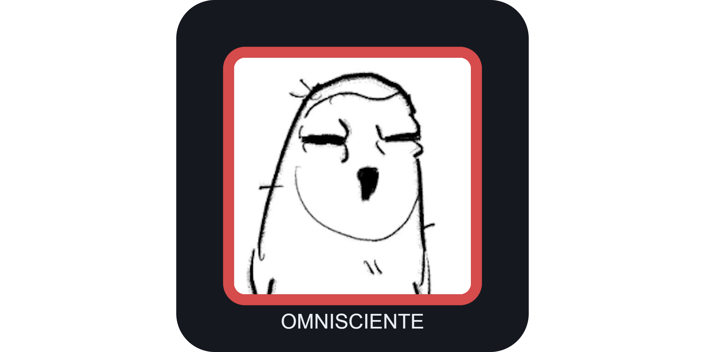

Acerca de nosotros

Omnisciente
Colaborador principal¿Qué somos?
Somos un proyecto independiente dedicado a recopilar, organizar y presentar información relacionada con la comunidad competitiva de Minecraft PvP. Nuestro objetivo es conservar la historia de jugadores, comunidades, servidores, rankings y acontecimientos que han marcado esta escena.
Buscamos reunir información que normalmente se encuentra dispersa entre videos, publicaciones, perfiles y conversaciones comunitarias, ofreciendo un espacio donde los lectores puedan conocer el contexto y consultar las fuentes originales.
El principal colaborador de este archivo es Omnisciente, usuario de Minecraft encargado de impulsar la recopilación, organización y presentación del contenido.
Nuestra forma de trabajar
Documentar
Reunir información pública sobre acontecimientos y figuras de la comunidad PvP.
Dar contexto
Ordenar los sucesos cronológicamente y explicar por qué tuvieron relevancia.
Contrastar
Distinguir fuentes, declaraciones, opiniones y acusaciones no verificadas.
Nuestro propósito
No buscamos promover ataques personales ni tomar partido de manera automática. Queremos que la comunidad tenga acceso a información organizada, con referencias que permitan revisar el contexto y comprender los distintos puntos de vista.